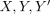
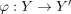
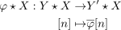
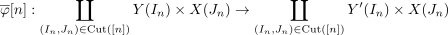
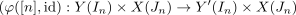
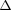
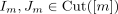
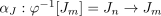
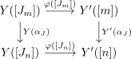
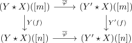

left induced morphism between joins
1. Definition / Proposition
Let

be simplicial sets, the join and
the join and 
a morphism of simplicial sets. Then there exists an induced morphism of simplicial sets
where

is the morphism induced by universal property of the coproduct and the universal property of the product for

2. Proof
Let  be a morphism in
be a morphism in

Let

be a cut and
be the induced morphism. then it follows by naturality of

commutes
Thus it follows by naturality of the product and coproduct , that

commutes
(cf. lim functor, colim functor)